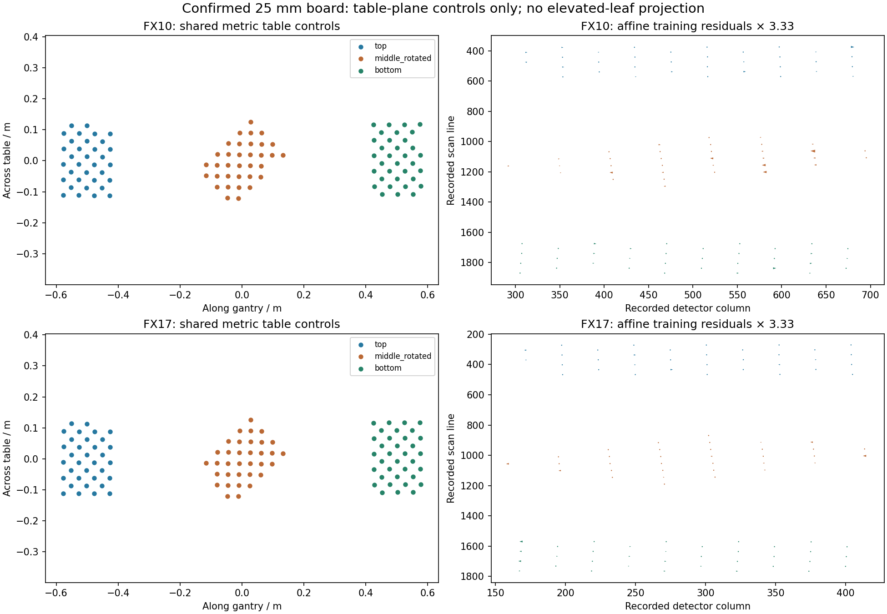

<script src="/research-assets.js"></script><!doctype html><html lang="en"><meta charset="utf-8"><meta name="viewport" content="width=device-width,initial-scale=1"><title>Confirmed-board shared spectral calibration plane</title><style>body{font:16px/1.6 system-ui;background:#f0f4f5;color:#152c38;margin:0}main{max-width:1200px;margin:auto;padding:28px}section{background:white;border:1px solid #ccd9dc;border-radius:10px;padding:22px;margin:20px 0}.note{background:#fff1d4;border-left:5px solid #a77017}h1{line-height:1.2}img{width:100%;height:auto}table{border-collapse:collapse;width:100%;font-size:14px}th,td{text-align:left;padding:8px;border-bottom:1px solid #dae0e2}.scroll{overflow:auto}a{color:#006887}pre{white-space:pre-wrap;font:14px/1.6 system-ui}</style><main><p>PHENOFUSION3D · CONFIRMED 25 MM BOARD</p><h1>One metric calibration plane across D405, FX10 and FX17</h1><section><p>Confirmed 25 mm cells connect the D405 board poses to 102 FX10 and 103 FX17 observed marker centres in a shared metric calibration frame. The best-supported sheet mapping is top → left, middle_rotated → middle, bottom → right. All six sheet permutations were evaluated, with marker IDs qualified by physical sheet.</p><p>The decoded IDs repeat on different sheets. Explicit physical-sheet labels, reference-panel location, target rotation and six tested mapping permutations prevent them being pooled incorrectly.</p></section><section class="note"><strong>This advances table-plane calibration. It does not establish leaf-height projection.</strong><p>The current frame is the D405 calibration camera at filename coordinate zero. A justified plant-scan frame transfer and height-dependent HSI camera model are still required before this can assign spectra to raised leaves.</p></section><section><h2>Entire-sheet held-outs, affine plane model</h2><p>Each fit uses two physical targets and predicts the third. Every decoded valid marker is retained. Mapping and model choices are assessed using these same folds; this is a model-selection diagnostic.</p><div class="scroll"><table><thead><tr><th>Sensor</th><th>Held-out sheet</th><th>Markers</th><th>RMS px</th><th>P95 px</th><th>Max px</th><th>Column / line RMS</th></tr></thead><tbody><tr><td>FX10</td><td>top</td><td>34</td><td>1.312</td><td>1.804</td><td>2.238</td><td>1.252 / 0.394</td></tr><tr><td>FX10</td><td>middle_rotated</td><td>34</td><td>0.905</td><td>1.569</td><td>1.985</td><td>0.823 / 0.376</td></tr><tr><td>FX10</td><td>bottom</td><td>34</td><td>1.385</td><td>1.939</td><td>2.238</td><td>1.348 / 0.316</td></tr><tr><td>FX17</td><td>top</td><td>34</td><td>0.679</td><td>0.967</td><td>0.998</td><td>0.464 / 0.496</td></tr><tr><td>FX17</td><td>middle_rotated</td><td>34</td><td>0.475</td><td>0.754</td><td>0.888</td><td>0.327 / 0.345</td></tr><tr><td>FX17</td><td>bottom</td><td>35</td><td>0.656</td><td>0.997</td><td>1.024</td><td>0.467 / 0.461</td></tr></tbody></table></div><p>Pixels are native detector-column / acquisition-line coordinates. They are not an isotropic surface-error measure.</p></section><section><p>The residual arrows above are training diagnostics; the table reports the separate held-out results.</p></section><section><h2>Methods, remaining limits and saved data</h2><p><a href="shared_metric_controls.csv">All 205 metric controls</a> · <a href="shared_plane_calibration.json">Models, permutation tests and exact held-out predictions</a> · <a href="grid_spacing.json">Table-grid spacing estimates</a> · <a href="validation.json">Validation receipt</a></p><pre>CONFIRMED-BOARD SHARED HYPERSPECTRAL CALIBRATION PLANE

Confirmed 25 mm cells connect the D405 board poses to 102 FX10 and 103 FX17 observed marker centres in a shared metric calibration frame. The best-supported sheet mapping is top → left, middle_rotated → middle, bottom → right. All six sheet permutations were evaluated, with marker IDs qualified by physical sheet.

The white reference panel is adjacent to both the HSI top target and the D405 left target. The rotated middle target and the opposite outer-marker orientations support this identification visually. The affine fitting residual is 0.624 px for FX10 and 0.355 px for FX17; the best incorrect permutation is 134.265 px and 107.969 px respectively. This is strong internal evidence for correspondence, not an independently confirmed physical specimen-label inventory.

Whole-sheet holdouts use two sheets for fitting and predict the third, without prior inlier removal. FX10 held-out RMS is 1.312 / 0.905 / 1.385 pixels for top / middle / bottom. FX17 is 0.679 / 0.475 / 0.656 pixels. Axis-wise values, exact held-out identities, predictions, residuals and alternative affine, planar pushbroom and homography models are preserved in shared_plane_calibration.json. Mapping/model selection uses these data; these folds are not a further independent final test.

Estimated table-plane grid spacing: FX10 0.612431 mm per detector column, 0.771606 mm per line; FX17 0.967897 and 0.771712 mm. These are local fitted table-grid increments, not ray footprints or dimensions at plant height.

FRAME AND HEIGHT LIMITS
All 3D controls are in D405 calibration-camera-zero coordinates, as supplied by d405_metric_calibration.json. These are not the later optimized plant reconstruction coordinates. Applying a map to plant points requires a justified transfer between calibration and plant scans, including relative start position.

The best-plane control departures span only -0.354 to +0.337 mm (0.166 mm RMS), reflecting fitted paper tilt/warp and pose uncertainty. This does not supply independent multi-height calibration across a plant volume. A planar map must not be projected onto raised leaves as if it were a calibrated pushbroom ray model. Off-plane geometry or independent spatial intrinsics/rig constraints and elevated validation controls are still needed.

This analysis uses saved source observations and the newly confirmed board model only. It does not alter source pixels, radiometry, reconstructed points, sparse associations, or frozen result folders. The existing selected wavelengths are FX10 661.10 nm and FX17 1301.56 nm; spatial wavelength dependence is not assessed here. Unknown white reference reflectance and dark-tail status remain separate radiometric gaps.

FILES
shared_metric_controls.csv: all 205 sheet-qualified metric controls.
shared_plane_calibration.json: every candidate mapping, model, held-out prediction and input hash.
shared_plane_diagnostics.png: spatial layout and training residuals (clearly labelled as training).
grid_spacing.json: approximate table-grid increments with explicit scope.
validation.json: independent arithmetic/hash/CSV checks.
</pre></section></main></html>